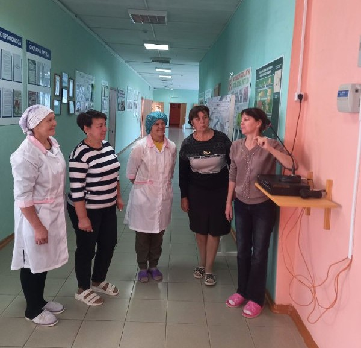
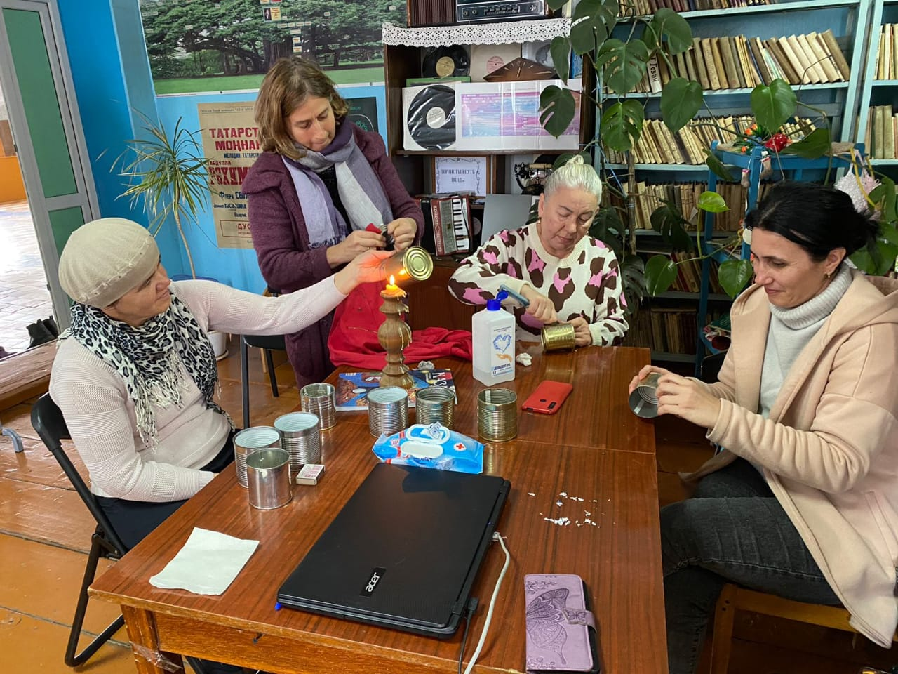

Методические рекомендации
Здесь представлены полезные материалы и рекомендации для педагогов, родителей и всех, кто работает с детьми дошкольного возраста.
📘 Рекомендации для воспитателей
- Во время адаптационного периода нужно использовать гибкость в режимных процессах: принимать детей сначала на 2 часа, затем удлинять время пребывания с учетом того, как быстро ребенок привыкает.
- Очень часто в первые дни посещения детского сада ребенок стремится к постоянному физическому контакту с воспитателем, не отпускает его от себя. Это серьезно затрудняет работу взрослого, который должен уделять внимание всем детям, организовывать режимные моменты и пр. Проблема может стать еще более сложной, если в группу поступают сразу несколько новых детей. Поэтому прием таких детей должен осуществляться постепенно, не более чем 2-3 ребенка в неделю.
- К детям нужно проявлять индивидуальный подход, особенно к очень чувствительным, замкнутым, сильно плачущим.
- Воспитатель должен быть снисходительным к плачу детей, отзывчивым на просьбы их родителей, внимательным, спокойным, способным обеспечить группе благополучный эмоциональный климат.
- Воспитатель должен быть хорошим актером: уметь вовремя рассказать сказку, спеть песенку, знать много произведений устного народного творчества: потешек, колыбельных песен, чтобы при случае отвлечь ребенка; использовать игры-забавы в качестве сюрпризного момента.
- Важное место должно занимать сотрудничество с родителями. Нужно так построить работу, чтобы с обеих сторон к ребенку предъявлялись единые требования.
- Наглядная информация должна быть яркой, насыщенной, нести смысловую нагрузку и быть актуальной на данный момент.
- Детские работы необходимо выставлять для обозрения родителям, чтобы они могли видеть, чем занимается ребенок в группе, и обсудить с ним успехи.
- При необходимости следует направить родителей за помощью к другим специалистам детского сада (психологу, старшему воспитателю, музыкальному руководителю, медсестре и др.).
- В процессе адаптации ребенка к ДОУ воспитателям рекомендую использовать элементы телесной терапии (брать ребенка на руки, обнимать, поглаживать). Периодически включать негромкую, спокойную музыку, но строгая дозировка и определение во время звучания обязательны.
- Лучшее лекарство от стресса – смех. Необходимо создавать такие ситуации, чтобы ребенок больше смеялся. Используются игрушки-забавы, приглашаются необычные гости – зайчики, клоуны, лисички и т. д.
- Необходимо присматриваться к индивидуальным особенностям каждого ребенка и стараться вовремя понять, что стоит за молчаливостью, спокойствием, пассивностью некоторых детей.

👪 Советы для родителей
- В первые дни посещения садика происходит сильная нагрузка на нервную систему. Ребенку необходимо быстро приспособиться к постоянному взаимодействию с малознакомыми людьми и к длительному отсутствию мамы. Так что не нагружайте малыша новыми впечатлениями. Выходные проводите спокойно, в кругу семьи.
- После того, как вы забрали ребенка из садика, играйте и общайтесь с ним. Пусть он забудет о группе и отдыхает. Не спрашивайте, нравится ли ребенку в саду и пойдет ли он туда завтра. Это наведет его на мысли, что возможно ему там будет плохо и в садик можно не ходить. Если вы хотите поговорить о садике, лучше спросить ребенка, что он ел и какие игрушки ему понравились.
- Ни в коем случае не пугайте ребенка походом в сад. Он должен уяснить, что пребывание в садике — это не наказание, а удовольствие.
- Во время стресса иммунная система замедляет свою активность. Чтобы ребенок реже болел, постарайтесь делать так, чтобы он получал максимум положительных эмоций, хорошо питался и много спал. Во время адаптационного периода, не наказывайте малыша за капризы и выходки, чаще обнимайте и говорите, что вы его любите.
- Если у вас есть недовольство садиком, не обсуждайте их в присутствии ребенка.
